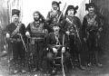
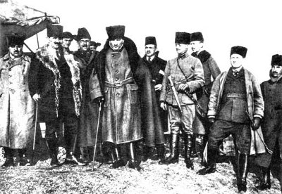
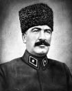
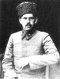

Karasu’da hakimiyet mücadelesi
İpsiz Recep, gerek hükümet kuvvetleri ve gerekse Fransızlar tarafından yapılan iki büyük baskından başarıyla sıyrılmışsa da Kefken’in artık kendisi için güvenli bir yer olmadığı kanaatine varmıştı. Elbette ki bunun devamı gelebilirdi. Bir torpido gemisi gönderenler bir dahaki sefere iki, üç hatta dört savaş gemisi gönderebilirlerdi. Öyleyse biraz daha iç kesimlere çekilmeli ama denizden ve bu bölgeden de fazla uzaklaşmamalıydı. Bu özelliği ancak Karasu taşıyordu. Fakat bu esnada Karasu da Yunan kuvvetleri bulunmaktaydı. Bununla beraber merkez kuvvetlerinden hayli uzakta olan Yunan kuvvetlerini ani baskınlarla sindirmek ve defetmekte mümkün olabilirdi.
Nitekim İpsiz Recep’in Kefken’den Karasu’ya gelmekte olduğu duyulunca buradaki Yunanlı askerler hemen çekilip kaçtılar. İpsiz Recep, Karasu’ya geldiğinde Haziran başlarıydı.[71]
Recep Reis Karasu’ya geldiğinde Yunanlılar kaçmıştı ama Rum çeteleri ve Anzavur taraftarı bazı işbirlikçiler hâlâ sağda solda faaliyetlerine devam ediyorlardı. İlk iş olarak işbirlikçi birkaç köylüyü yakalayarak hainlikleri sebebiyle kurşuna dizmiştir. Daha sonra bu kuvvetler ile kıyasıya bir kavgaya tutuştu. Fakat sonunda bir avuç adamıyla bölgeye hâkim olduğu gibi bütün Rum eşkıyalarını ve Anzavur taraftarlarını sindirmeye ve kaçırmaya da muvaffak olmuştur.[72]

Soldan Sağa: Mehmet Altıkanoğlu, Osman Altıkanoğlu, Salih Çavuş (Sürmeneli), Süleyman Asaf (Topçu Yüzbaşı), Ali Kansız [73]
Yeni üs Karasu
Artık Karasu İpsiz Recep Çetesi için bir üs haline getirmişti. Ancak muhtelif görevlendirmeler ve gerekli operasyonlar esnasında buradan ayrılıyor sonra yine buraya dönüyordu. Bu sıralarda Rize’den beş arkadaşı ile gelerek İpsiz Recep’e katılan Zekeriya Tiryaki, onu Karasu’da bulmuştu. Durum adamakıllı karışıktı ve İpsiz Recep, İstanbul hükümetinin emrinde çalışan Çerkez Anzavurla işbirliği yapan bazı Abazalarla çarpışmaya devam ediyordu. İpsiz’in bu arada halkı bilinçlendirme ve silahlandırma çalışmaları da vardı. Silah kaçakçılığı sadece bir memleket meselesi değil aynı zamanda bir geçim kaynağı halini de almıştı. İstanbul’dan gelen bazı takacılar ise nereden ele geçirdikleri tüfek ve cephaneyi İpsiz Recep vasıtasıyla halka satıyorlardı. Herkes bir silâh ve birkaç yüz kurşun tedarik etmeye bakıyordu. İşe yarar bir tüfek 50 liraya kadar satılabiliyordu. Zekeriya Tiryaki’nin anlattığı şu anekdot oldukça ilginçtir:
Kadın, delikanlıya soruyor:
— Tüfeğin var mı senin?
— Yok.
— Neden almadın?
— Param olmadığı için.
— Al şu öküzü sat da kendine bir tüfek al.
Bu arada çetenin sayısı her geçen gün artıyordu. Çeteye katılanlar arasında Zekeriya Tiryaki’nin tabiriyle “ipten, kazıktan kurtulmuş olanlar” da bulunuyordu. Bir gün de Kastamonu Cezaevi’nden kaçan iki idam mahkûmu gelmiş, Emice de bunları derhal kabul etmişti. Ancak kısa bir süre sonra o bölgenin komutanı olan Muhittin Paşa’dan bir haber geldi. Bu iki mahkûmu istiyordu. İpsiz, Muhittin Paşa’ya şöyle bir cevap yazdırdı: “Paşam, bizim burada gördüğümüz iş öyle nazik beylerle yahut hoca, hacı takımıyla görülmez. Bize böyle gözü pek adamlar lazımdır. Onun için rica ederim, bunları bana bırakınız.”
Paşa’dan hiçbir cevap gelmemiş; belli ki o da bunu uygun bulmuştu.[74]
İşbirlikçilere verilen ders
Karasu Nahiyesi’nin Cihadiye Köyü’nde Edik Ağa adında geçmişte bölge halkına yaptığı zulümleri ile meşhur olmuş ve bu yüzden devletle arası açılmış bulunan bir kolcubaşı bulunmaktaydı.[75] Mayıs ayı başlarında bastırılan Düzce Ayaklanması sırasında ikili oynayan bu Kolcubaşı’nın adamları Karapınar köyünde Rizeli Sülükoğlu Topal Osman’ı pusuya düşürmüşlerdi. Osman’ın Ali adında bir kardeşi vardı. Ağabeyinin kanını onlara bırakmayacağı açıktı. Altı arkadaşıyla birlikte Karapınar-İncili arasında birkaç kez pusu kurmalarına rağmen başarılı olamadılar. Bu defa geniş çaplı bir darbe vurabilme hususunda İpsiz Recep ile anlaştılar. İntikamları müthiş olacaktı. Bu işlere bir son vermek için onu İncili’ye davet ettiler. Barış yeri Nahiye Müdürü Hendekli Bahadır’ın makam odası olacaktı.
Üçüncü davete icabet eden Edik Ağa, hiçbir şeyden şüphe etmeksizin otuza yakın adamı ile kasabaya indi. Sekiz seçme adamı yanında olduğu halde nahiye binasına girdiler. Barışma şerefine meydana kurulan kazanlarda kesilen sığır ve koyun etleri pişmekteydi. İpsiz ve Edik el sıkıştılar. Kahveler içildikten sonra birlikte kavisli merdivenlerden inilirken birden bire yukarıdan bir tüfek patladı. Edik Ağa kanlar içindeydi. Beyninden vurulmuştu. Abaza eşrafından Ömer, Kargaşalık anında bir fırsatını bulmuş kendisini dışarı atmıştı. Fakat Kanburoğlu Sokağı başındaki Salih Ağa’nın kahvesinin köşesinde dikilen Sandıkçı Hüsnü’nün tüfeğinden çıkan kurşun onu da yere sermişti. Düşürüldükleri pusuyu geç anlayan Abaza Edik Ağa’nın adamları birer ikişer yok ediliyorlardı. Nahiye binasına Edik Ağa ile birlikte giren diğer yedi kişi bir odaya sokulmuş, üzerlerine açılan yaylım ateşi ile üst üste bir ölüm yığını haline konulmuşlardı.
Cesetler kaldırılırken yığının altında kalan Hafız adındaki şahıs, tesadüfen küçük bir sıyrık dahi almadan kurtulmuştu. Onun bu şansını İpsiz Recep Reis de tanıdı ve serbest bıraktı. Cesetler at arabalarına gelişigüzel doldurularak gömüldüler. Böylelikle Milli Mücadele önünde set oluşturan işbirlikçi hainlere de bir ders verilmiş oluyordu.[76]
Ancak düşman da boş durmuyordu. Yunanlılar ve Rum çeteleri ile birleşen Anzavur taraftarı işbirlikçiler Karasu’ya ani ve şiddetli bir baskın yapmaya karar verdiler. Sayıları 600’ün üzerindeydi.[77] Maksatları, ne pahasına olursa olsun İpsiz Recep’i tutup öldürmek, adamlarını da hiç olmazsa birer kazığa vurmaktı. Ama emellerine ulaşamadılar. Mustafa (Uzun), Salih Çavuş, Kolcunun Hüsnü, Hasan Çavuş, Parmaksız Ahmed, Bayram Ali ve İsmail Hakkı adındaki nöbetçiler işin farkına vararak Bağırgan Köprüsü civarında önlerini kestiler ve sabaha kadar devam eden sert çatışmalar neticesi onları geri dönmeye mecbur bıraktılar. Abazaların bu güçlü baskısı sayıca oldukça yetersiz olan İpsiz Recep’i çare aramaya sevk etmişti. İlk önce yapılması gereken daha güvenli bir bölgeye çekilmek olmalıydı. Karasu’dan Küçükboğa mevkii yolu ile Akçakoca’ya çekilme kararı verdi.[78]
“Bana Rize’nin eşkıyaları lazım”
Karasu’da bu yaşanan hadiselere aşırı derecede hiddetlenen İpsiz Recep, Akçakoca’da doğru telgrafhanenin yolunun tuttu. Artık emrinde olan kuvvetlerin kendisine yetmediğini görmüştü. Aklına ilk gelense Rize’de ve sair yerlerde hapishanelerde boş boş ömür tüketen ancak cesur ve atılgan hükümlülerdi. Bunun için Rize Müdafaa-i Hukuk Cemiyeti Başkanı Mehmed Efendi’ye derhal şu telgrafı yazdırdı:
“Ey koca Mehmet Efendi! Burada Rumlar, Abazalar Karadenizlilerin mallarına canlarına kastederken sen Rize sokaklarında bastonuna dayanıp geziyorsun. Hemen bütün Rize eşkıyasını toplayıp Tuzcuzaâde Halit Ağa’nın maiyetine verip buraya gönderesin.”[79]
Mehmed Efendi bu telgrafı alır almaz doğruca mutasarrıfa giderek, kendisine su sözleri söyledi:
— Rizeyi bildiğiniz gibi eşkıya istilâ etti. Bunun önü bir türlü alınamıyor. Yolları kesiyorlar, şunu, bunu soyup duruyorlar. Durmadan adam öldürüyorlar. Bir şey yapamıyorsunuz, zindan da eşkıya ile dolu. Yenilerini koyacak yer yok. En İyisi Ankara’ya yazalım, bunları İpsiz Recep’in yanına gitmek şartıyla affettirelim. Onun emrinde gâvurlarla harp etsinler. Bu katil ve eşkıya güruhunun bir kısmını Yunanlılar vurur, bir kısmını da İpsiz Recep temizler. Bir kısmı da ıslahı nefsederek günahlarını öder. Biz de Rize’yi bu şekilde temizlemiş oluruz.
Mutasarrıf bu teklifi yerinde bularak durumu Ankara’ya telgrafla bildiriyor. Kısa bir zaman sonra da Atatürk, Rize Jandarma Alay Kumandanı Şükrü Bey’e bu doğrultuda emir vermiştir.
Bunun üzerine doğruca Rize zindanına gidildi. Mutasarrıf orada mahkûmlarla bir konuşma yaptı. Vatanın durumundan, İpsiz Recep’in gayretlerinden bahsetti. Onun emrinde çarpışmaya hazır olmalarını bildirdi. Zekeriya Tiryaki; “Ben doğrusu bundan pek bir şey çıkacağını ummuyordum”[80] diyor ama aslında hiçte onun düşündüğü gibi olmadı.
Atatürk İpsiz’i Sakarya sahil kumandanı yapıyor
İpsiz Recep, bir avuç gönüllü ile geldiği bu bölgeye hâkim olduktan ve milli kuvvetlere yardıma başladıktan sonra şöhreti bir anda yayılmıştı. Bunun üzerine Bolu’daki milli kuvvetlerin başında bulunan Nureddin Paşa da kendisini görüşmek üzere çağırmıştı. Yanına on adamını alarak Nureddin Paşa’nın karargâhına giden Recep Reis, burada Paşa’nın yaveri tarafından karşılanmış, ancak yaverin görüşmeye girmeden önce silahını kendisine emanet etmesini istemesi üzerine ondan şu cevabı almıştı:
— Ben gece uyurken bile tüfeğimi yanımdan ayırmam!
Kararsız kalan yaver onu bekleterek Nurettin Paşa’nın yanına girip durumu bildirmiş, Paşa da tüfeği ile girmesine müsaade etmiştir.
İpsiz Recep, içeri girdiğinde Nurettin Paşa’da bunca maceraların kahramanı olan bu adamı dikkatle süzdükten sonra şu soruyu sormuştur:
— Sen nesin, inmişin, cin misin, maksadın nedir, bu davaya ne maksatla katıldın?
Bu sorulara İpsiz Recep’in cevabı şudur:
— Ben uzun yıllar hep babama[81] muhalif çalıştım. Onun git dediği yoldan gitmedim de hep ona zarar veren yolda yürüdüm. Bugün ise ortaya babamın bir düşmanı çıkmıştır. Ne kadar hayırsız bir evlât olsam da bana düşen, onu yok edinceye kadar çalışmaktır. Maksadım bundan ibarettir.
Bu cevaplardan oldukça memnun kalan Nureddin Paşa durumu hemen Ankara’ya bildirmiş, Atatürk de ona “Sakarya Sahil Kumandanı” unvanını vererek, bir de mühür göndermiştir.
Sakarya Sahil Kumandanlığı meselesini Murat Sertoğlu’na bu şekilde aktaran Mehmed Keçeli, kendilerinin Rize’den “eşkıyalarla birlikte” İpsiz Recep’e katılmak üzere geldiklerinde Emice’nin bu unvana sahip olduğunu söylemektedir.[82]
8-18 Haziran 1920/Ereğli işgalcilerden temizleniyor
8 Haziran 1920 günü Fransa bir gambotunu nakliye gemisi ile beraber Ereğli Limanı’na gönderdi. Fransız Filosu’ndan bir subay ve tercüman karaya çıkarak kaymakamlığa gittiler. Korsanlık ve haydutluk olayları karşısında menfaatlerini korumak için Heraklia Tepesi’ne (bu günkü Ereğli kulesinin bulunduğu tepe) asker çıkartıp kamp kuracaklarını bildirdiler. Aynı zamanda dirlik ve düzenin korunmasında Osmanlı Devleti’ne yardımcı olmak istediklerini de belirtmeyi ihmal etmediler. Fransızlar bu görüşme sonrasında aynı gün nakliye gemisiyle getirdikleri askerlerle şehri işgal ettiler.[83]
İpsiz Recep, tam Karasu’ya yerleşmiş ve çevresini temizlemişti ki, bu haber kendisine ulaştı. Fransızlar, bu zamana kadar sadece kömür havzaları ile ilgilenirlerken bu sefer şehri tamamen işgal etmişler giriş çıkışlar, resmi daireler tamamen onların kontrolü altına girmişti. Üstelik işgal gerekçelerden biri de Karadeniz’deki korsanlık hadiseleriydi.
Ereğli Müdafaa-i Hukuk Cemiyeti durumdan derhal Büyük Millet Meclisi Reisi Mustafa Kemal Paşa’yı haberdar etti. Mustafa Kemal Paşa’dan gelen cevabî telgrafta ise Fransızların bu hareketine karşı gerekli tedbirlerin alınacağı ancak bu tedbirlerin tesirini gösterinceye kadar kaza dâhilindeki milli kuvvetler ile gerekli direnişin gösterilmesi emrediliyordu. Aynı anda çevredeki milli kuvvetler de durumdan haberdar ediliyor ve Ereğli savunması için kendilerine emir veriliyordu. Bu arada aynı emir İpsiz Recep’e de ulaşmıştı.[84]
İpsiz Recep bütün kuvvetini toplayarak Ereğli üzerine yürüdü. Burada önce bir keşif yaptırdı. Görünüşe göre, Fransızlar limanda kaldıkları müddet içinde geceleri nöbetçileri çoğaltıyor, gündüzleri de karaya çıkıp eğleniyorlardı. Bu halde yapılacak bir baskın gündüzün tam ortasında olmalıydı. Alınan karara göre üçer kişilik guruplarla kayıklara binilecek ve balık avlama bahanesiyle yaklaşıp gemiler bomba yağmuruna tutulacaktı. Nihayet Recep Reis emrini verdi:
— Haydeyn uşaklar göreyim sizi! Sikovatların (Korvet) hadlerini bildurelim!
Fakat tam o sarada harp gemilerinden top ateşi başlamıştı. Bir şeylerin döndüğünü sezen İpsiz Recep’e yanına gelen adamlarından biri Abazaların Fransızlara ispiyonluk yaptıklarını bildirmesi üzerine, çete bu defa tüfek ateşine geçti. Koca kurt hırsından yerinde duramıyordu. Sıkılı yumruklarını aralıksız ateş eden Fransız Korvetlerine sallayarak:
— Ula Gâvurun dinsuzleri! Yardakçılarinuz etti habu işi bağa. Habunu yanınıza korsam bağa da İpsuz demesunler! Sözleriyle avazı çıktığı kadar bağırıyordu. Güçlükle teskin edildikten sonra Alaplı’ya çekilme emrini verdi. Yol boyunca sinirlenen, titreyen ve ikide bir burnunu çeken İpsiz Recep Reis, yanındakilerin yakasından çekerek:
— Ha uşaklar, bana bi tane ensesinden kesilmedik işbirlikçi getirene bir koç vereceğum! Diyordu.
Alaplı’da iyi karşılanan çete efradı evlere taksim edildi. Çok yorgun olanlar sofalara serilen şiltelere uzanmışlardı. Çete ileri gelenleri ise köy odasında toplanmışlardı. İpsiz Recep bir anda ayağa kalktı ve yanındaki Şerif Kaçıran’a:
— Ula aynayla başbağlayan! Uşaklara haber ver, habu gece gavur silkovatlarını batıracağuk! ...
Dedikten sonra, gözlerini uzaklara dikerek gürledi:
—Dinsizun kopelleri (Piçleri)! Şimdi yedum sizi…
Akşamın geç vaktinde Alaplı çarşısı insan selinden geçilmez hale gelmişti. Evlerinden fırlayan köylüler, sahile çekili teknelerini “heyemola” ile denize sürüyorlardı. Bir anda dolan takaların küreklerine yapışan çelik eller, onları sabahın alacakaranlığında Ereğli’ye getirdi. Ne yazık ki limanda yabancı hiç bir gemi görünmüyordu. Az sonra anlaşıldı ki top atışlarına karşı tüfekle mukabele edenlerden korkan Fransız harp gemileri selameti firarda bulmuşlardı.[85]
Anzavur artıkları Akçakoca’da
İpsiz Recep bütün kuvvetiyle Ereğli’ye geçince, meydanı boş bulan Anzavur artıkları hemen Akcakoca’yı işgal etmişlerdi. Hepsi de atlı olan bu kuvvetler bir taraftan kasabayı yağma ederlerken diğer yandan da kaymakam ve memurlar tayin etmişler ve Akçakoca’nın İstanbul hükümetine bağlanmış olduğunu ilan etmişlerdi.
Recep Reis bu sırada Ereğli’deki işini tamamlamış Akçakoca’nın işgal edildiğini öğrenir öğrenmez bütün kuvveti ile ve yıldırım hızı ile Akçakoca’nın üzerine yürümüştü.
Reis’in gelmekte olduğunu haber alan Anzavur taraftarları bir anda dağılıverdiler. O mağrur tavırlarından eser kalmamıştı. Atına atlayan kaçmaya bakıyordu. Bu arada halkın mallarını da yağma etmeyi ihmal etmiyorlardı. Halk bu durum karşısında pek üzgün ve çaresizdi. Yapacak bir şeyleri yoktu. Bu sebeple İpsiz Recep’in gelmekte olduğu haberi herkesi sevince boğdu. O esnada bir ziyaret için Akçakoca’da bulunan Kefken Fenercisi Hüseyin Çavuş bundan sonrasını şu şekilde anlatıyor:
“Kasabada kimse kalmayınca İpsiz Recep’in gelmiş olduğunu anladım. Hemen deniz kenarına koştum.
Baktım amcam orada idi. Kahvenin önünde. Birkaç adamı ile oturuyordu.
Beni görünce:
— Ooo!, sende mi buradasın? Diye sordu.
— Bir ziyaret için gelmiştim. Kısılıp kaldım! Dedim.
— Yazık ki geldiğimizi duyup hepsi kaçtılar, dedi. Şunlardan bir kısmını olsun temizleyemedik.
Biz kendisiyle konuşurken bir çocuk koşa koşa yanımıza geldi. Limandaki takalardan birisini işaret ederek:
“Şu takanın içinde üç tane eşkıya saklı” haberini verdi. Bunlar nasılsa kaçamayıp oraya saklanmışlardı. Amcam hemen yanındakilere emir verdi:
— Birkaç kurşun atın haşuraya!
Uşaklar hemen tüfeklerini kaldırıp ateş etmeye başladılar. O anda takanın içinden feryatlar gelmeye başladı. Böylece hakikaten eşkıyaların saklanmış bulundukları belli oldu. Uşaklar feryatlar kesilinceye kadar ateş etmeye devam ettiler. Feryatlar kesilince Recep Reis
— Yazık oldu! Dedi.
Ben Onun ne demek istediğini anlayamamıştım. Hem adamların öldürülmesini emretmişti, hem de şimdi onlara acıyordu:
— Ateş etmelerini sen emir etmedin mi?
— Evet!
— Peki şimdi?
— Yok kardaşluk! Ben olara değil, takaya acidum. Adamcağuzun malini sakatladuk!
Ancak o zaman’ işin iç yüzünü anlayabildim.[86]
25 Temmuz 1920/Ağva’nın işgali ve Hamza’nın şehit edilmesi
25 Temmuz 1920 günü çetesi ile birlikte Ağva’ya giren İpsiz burada bazı kişileri cezalandırmışlardır. Bilahare çarşı içinde uygunsuz davranışlarını gördüğü kendi arkadaşlarından birisini de iki el silah sıkarak öldürmüştür. Ağva’ya gelmekteler iken ahaliye ait bir takım koyun ve sığırlara el koymuşlardı. Bu sebeple Şile’den takiplerine gelen kuvvetle çatışmaya girmişler ve bu çatışma esnasında yeğeni Hamza şehit düşmüştür. Canı çok acıyan İpsiz, yeğeninin cenazesini bu civarda Üzümbağları denen mevkie defnettikten sonra intikamını almak üzere Şile’ye hareket etmişti. Ancak, Ağva Telgraf Müdürü Rıfkı Efendi bunu hemen Şile’ye yetiştirmişti. Recep Reis durumu fark ettiğinde adamlarından bir kısmını telgraf müdürünü cezalandırmak üzere göndermişse de Rıfkı Efendi kaçmak suretiyle kendini kurtarabilmişti. Rıfkı Efendi’yi bulamayan çeteler, telgrafhanenin kasasını soymak istemişler, ancak bu kez de jandarma takım kumandanının devreye girmesiyle bundan vazgeçmişlerdi. Durumdan etkilenen köylüler ile Şile kazası ve Ağva halkı göç etmek zorunda kalmışlardı.[87]
8 Ağustos- 3 Eylül 1920/II. Düzce İsyanı
19 Temmuz 1920’de Hendek’in doğusunda yer alan Nuh ve Akıntı köylerinde başlayarak Düzce’ye kadar ulaşan Nuhveren İsyanı’nın halledilmesinden[88] bir müddet sonra asiler Düzce üzerine yürümek için tekrar faaliyete geçtiler. Bu sırada Orhangazi Müfrezesi adıyla anılan İpsiz Recep Çetesi de bu civarda bulunmaktaydı. İpsiz Recep’ten başka ayrıca küçük bir kuvvet daha Düzce dışında bekletilmekteydi. Asiler bundan istifade ederek hazırladıkları bir planla Düzce’de yöneticileri alıkoyarak bir gece sabaha karşı İpsiz Recep Çetesi’ne bir baskın düzenlediler ve onları tesirsiz hale getirdiler. Bilahare de Düzce’yi işgal ettiler. 8 Ağustos’ta gerçekleştirilen bu harekâttan sonra isyan sahası Bolu, Mudurnu, Hendek ve Adapazarı’na kadar genişleme eğilimi gösterdi.
Recep Reis’in İzmit’i işgali
Yunanlılar birden Kocaeli cephesinde taarruza geçmişler, İzmit’i, Adapazarı’nı işgal etmişlerdi. İpsiz Recep Çetesi’ne de İznik ovasında Yenişehir cephesinde savaşması emredildi. Buradaki Süvari Fırka Kumandanı Hacı Arif Bey’in emrine verildi. İlyas Sami (Kalkavan), İzmit’i işgalden kurtaran birliğin İpsiz Recep müfrezesi olduğunu belirtmekte ve İpsiz Recep’ten o sıralarda altmış beş yaşında olmasına rağmen güçlü, kuvvetli ve cesur bir cengâver olarak bahsetmektedir.
Çakır Mehmed’in halli
Göynük ile Eskişehir arasında 13 köy birden isyan etmişti. Bu köylerin bir kısmı Çerkez köyleri idi. İstanbul’dan aldıkları teşvik tahrik sayesinde başkaldırmışlardı. Etrafına topladığı 150 kişilik çetesiyle Yunanlıları destekleyerek Eskişehir dolaylarında eşkıyalığa başlayan Çerkez Çakır Mehmed de bu isyancılar arasında olup başa çıkılamaz hale gelmesi sebebiyle İlyas Sami komutasındaki süvari birlik onun takibine memur edildi. Bu maksatla İpsiz Recep kumandasındaki kuvvet de takviyesine verildi. İlyas Sami anılarında İpsiz Recep Çetesi’nin piyade olduğundan Nallıhan’da kalmak zorunda kaldığını söylemektedir. Operasyon ise Çakır Mehmed’in imha edilmesi ile tamamlanmıştır.[89] Ancak İpsiz Recep’in eşi Nadire Hanım at üstünde kendisinin de Eskişehir’e kadar gittiğinden ve orada hastalandığından bahsetmektedir. İpsiz Recep’in bu harekâttan geri kalmasının bir nedeni de eşinin hastalanması olabilir.[90]
8 Ekim 1920/Adapazarı’nın işgali ve bir tren kaçırma eylemi
Denizde her çeşit nakliye aracının etkisiz hale getirilmesi konusunda uzmanlaşan İpsiz Recep çetesi bu kez farklı bir eylemin planlayıcısı ve icracısı olmuştur. 8 Ekim’de Geyve’den hareket eden bir milli müfreze fazla bir direnişle karşılaşmadan Sapanca’yı tekrar ele geçirmiş, bu sırada Adapazarı istikametine gönderilen bir kol da Arifiye’deki düşmanı tenkil ederek 6 esir almıştır. Aynı müfreze Beşköprü civarında düşmanla da çatışarak üç saat sonra Adapazarı’na girmeye muvaffak olmuşlardır. Bu esnada İstanbul hükümetinin memurları ve muhalifler firar etmişler ve Sapanca’da olduğu gibi Adapazarı’nda da milli kuvvetler halk tarafından hürmet ve saygı ile karşılanmıştır.[91]
Bu arada İzmit’ten Adapazarı’na gitmekte olan bir kısmı askerî malzeme yüklü 20 vagonluk bir yolcu ve yük treni Karaçam’a kaçırılmıştır.[92] Tarihçi Adnan Sofuoğlu, bu trenin İpsiz Recep müfrezesi tarafından kaçırılmış olduğunu iddia etmekteyse de Kâzım Aras, treni kaçıranın Deli Şaban olduğunu söylemektedir.[93] Ancak bu Deli Şaban, Kansız Ali, Laz Şeref gibi İpsiz Recep’e bağlı çalışan bir çete de olabilir.
Ekim 1920/İpsiz’in adı Karasu’yu kurtardı
İpsiz Recep’in Karasu ve Akçakoca civarlarından uzaklaşmasını fırsat bilip meydanı boş bulan İzmit ve civarı ile Karasu yerlilerinden 1.500 kadar Rum içlerinde 300 kadar yerli hain olduğu halde İzmit’ten gelerek Karasu’ya girmişlerdi. Burada yağma ve soyguna girişmişler, belediye başkanının evini yakmışlar 20 kadar masum sivili öldürerek halktan ayrıca 5.000 lira istemişlerdi. Halk arasında birden bire “İpsiz Recep geliyor!” şayiasının yayılması, hainlerin parayı henüz alamadan kaçmaları için yeterli olmuştu.[94] Artık İpsiz’in kendi olmadığı zamanlar hayaleti iş görüyordu.
Rizeli eşkıyaların İpsiz Çetesi’ne katılması
İpsiz Recep’in Akçakoca’dan takviye kuvvetler gönderilmesi konusunda çektiği telgraflar boşa gitmemişti. Telgraflar Rize Müdafaa-i Hukuk Cemiyeti’ne ulaşır ulaşmaz derhal harekete geçilmiş Rize, Hopa ve Ardeşen’de tellâllar çıkartılarak durum dağlarda bulunan eşkıyalara da ilan edilmişti. Cepheye gideceklerin af olunacağını öğrenen birçok eşkıya da dağdan inerek İpsiz’in emrine girmek üzere Rize’ye gelmişlerdi. Böylece büyük bir kuvvet toplanmış oldu.[95]
Eşkıyanın bir kısmı silahlı bir kısmı da silahsızdı. Silahları ile yakalanan ve silahlarına el konan eşkıyaya silahları geri verilmişti. Silahsız olanlara da İpsiz Recep silah verecekti. Zamanın ünlü eşkıyalarından Kansız Ali de buradaydı.
Bu karara istemeye istemeye razı olup hapishanede de bir konuşma yapan Rize Mutasarrıfı yine de “gözüm görmesin” diye eşkıyayı iskeleden motora bindirtmemişti. Bunun üzerine bunlar biraz açığa demirleyen motora binmek için denize atlıyorlar ve yan bellerine kadar ıslanmış halde motora çıkıyorlardı. Bu arada yaşanan duygusal bir konuşmayı İpsiz Recep’e katılmak üzere hazırlananlar arasındaki en genç çeteci ve İpsiz Recep’in yeğeni Mehmed Keçeli şöyle anlatıyor:
Biz Mataracı’nın evindeydik. Henüz motora geçmemiştik. Binenleri seyrediyorduk. Benden başka Kansız Ali, Kalafat Arslan, Alalimoğlu Mahmud bir odada idik. Şükrü Bey geldi.
Ayağa kalkmaya davranınca:
— Ayağa kalkarsanız içeri girmem! dedi. Biz de bunun üzerine oturduk.
Bize birer sigara verdikten sonra:
— İçinizde İpsiz Recep’e en yakın olan kimdir? Diye sorunca;
— Budur, diye beni gösterdiler.
Şükrü Bey pencerenin önüne geldi. Motora binmekte olanları seyrederken gözleri yaşardı. Yanında bulunan ev sahibine:
— Hafız bu millet böyle nereye gidiyor, biliyor musun? Diye sordu.
Hafız:
— Sen elbet bunu hepimizden iyi bilirsin, dedi.
O zaman Şükrü Bey sözlerini şöyle tamamladı:
— Ben evime gitsem denize böyle atlamam. Bu millet ise düşmanla savaşa gidiyor. Böyle bir millet nasıl yenilebilir? Evet, milletimiz cahildir ama çok vatanperverdir, iyilikle ona her şey yaptırılır.
Motorla Rize’den ayrılırken bütün Rize halkı bizi selametlemeye gelmişti. Anlatılmaz bir neşe içinde yola koyulduk. Şarkılar söylüyor, kemençecinin çaldığı havaya uyarak horon oynuyorduk.[96]
Bunların bir kısmı posta seferini yapan gemi ile bir kısmı da büyük bir motorla yola çıktılar. Trabzon’a vardıkları zaman Topal Osman Ağa’nın adamları ile karşılaştılar. Bu vesile ile eğlenceler tertip edildi. Ziyafetler verildi. Mehmed Keçeli bu esnada bazı eşkıyaların kaçabileceği endişesinin yaşandığını ancak tek bir mahkûmun bile buna yeltenmediğinden yeminle bahsetmektedir.
Topal Osman, Hafız Muharrem’e çetenin ihtiyaçlarını karşılamak için beş yüz lira kadar para da vermişti. Bu para ile giden kuvvetlerin yiyecek ihtiyaçları karşılandı. Ereğli’ye gelip de İpsiz Recep’in yanına varıldığı zaman, İpsiz Recep, Topal Osman’a bu parayı iade etmiştir.
Bu yolculuk çok güç hava şartları altında yapılmıştı. Trabzon’dan hareket ettikten sonra şiddetli bir fırtınadan sonra Samsun’a büyük güçlükler içinde ulaşılmış ve fırtınanın geçmesini beklemek için orada altı gün beklemek mecburiyeti hâsıl olmuştu.[97]
İpsiz Recep müfrezesine katılan azılı eşkıya ve korsanların sayısı 500’ün üzerindeydi. Dışarıdan da gönüllü olarak katılanlarla beraber 600 kişiyi buluyordu. Bunlar gelince çetenin kuvveti birkaç misline çıkmış oldu. İlk iş olarak Karasu yeniden ele geçirildi. Karasu çevresinde 13 Rum köyü vardı. Hepsi de Rum eşkıyasına ve Yunan askerlerine yataklık ediyordu. Bunlar da çetenin hâkimiyeti altına alındı. Rumların büyük bir kısmı İzmit’e kaçtılar. İpsiz Recep, boş zamanlarda Rumlardan kalan ekinleri biçtiriyor, hayvanları yaydırıyor ve hükümetten hiçbir şey istemeden bu kadar kişiyi doyuruyordu.[98]
30 Ekim 1920/Binbaşı Yusuf Ziya’nın ipsize saldırısı
19 Temmuz’da başlayan Nuhveren ve onu takiben çıkan II. Düzce olayları da sonuçlanmış bulunmaktaydı. Ancak yine de bu isyanların bastırılmasından sonra bölgede ufak çapta da olsa bazı çapulculuk ve isyan hareketleri vuku bulacaktır. Nitekim 30 Ekim’de Adapazarı’nda mütekait Binbaşı Yusuf Ziya, topladığı bir kısım kuvvetle Sakarya’da İpsiz Recep müfrezesine taarruz edecek ve bu hadise de o bölgedeki kuvvetleri epey meşgul edecektir.[99]
27 Ocak 1921/Alemdar Gemisi’nin zabtı
İşgal altındaki İstanbul’da düşman toplarının şehre çevrilmiş olan namlularının karşısında küçük bir Tük gemisi Kabataş rıhtımına bağlı duruyordu. Bu gemi Alemdar isimli kurtarma gemisi idi. Alemdar’a bir gün Karadeniz’e çıkarak Sinop’a gitme ve bir “asi” gemi olan Preveze gambotunu yedeğine alarak İstanbul’a getirme emri verilmişti. Bir an önce bir fırsat bulup Anadolu’ya geçmeyi planlayan geminin Çarkçıbaşısı Kadıköylü Osman Efendi de ne zamandan beri böyle bir fırsatı gözlüyordu. Ne var ki bir süre sonra bu hareketten vazgeçildiği haberi geldi. Ama Osman Efendi kararını vermişti bir kere.
Geminin kaptanı Recep Reis ise esaretten yeni dönmüş ama hâlâ köyüne, çoluk çocuğuna varamamıştı. İstanbul’da yaşamak da bir nevi esaretti zaten. İki kafadar bir araya geldiklerinde ikisi de birbirinin halinden çok iyi anlamıştı. Hiç çekinmeden meseleyi bir birlerine açtılar ve gemiyi kaçırma hususunda bir anlaştılar. Bu iki denizci bu anlaşmayı yaparken Türk denizcilik tarihine altın harflerle yazılacak bir eylemin ilk adımını attıklarının farkında bile değillerdi. Kaçış için üzerinde durdukları tarih, denizcilerin çok iyi bildiği ve beklenen bir fırtınalı gün olacaktı. Böylelikle peşlerinden hiçbir gemi onları takibe çıkamayacaktı. Zaten bir kurtarma gemisi olan Alemdar’ın bu iki emektarı da denizlerin olağanüstü durumları hususunda oldukça tecrübeliydiler. 150 tonluk on mil süratinde olan Alemdarın kazanları 23 Ocak 1921 günü iyice fayrap edilmişti. Kömürünü almış kumanyasını düzmüştü. O gece hareket ettiler. 24 Ocak günü Ereğli Limanı’na girdiğinde onlar için istiklal güneşi doğmuştu. Gemide kendilerinden başka makine lostromosu Ahmed ve 2 yağcı, 3 ateşçi ve 2 güverte tayfası ile birlikte toplam on kişi idiler.
Burada Ereğli Liman reisi duruma el koydu. İlk iş olarak geminin noksan mürettebatı tamamladı. Üsküdarlı İsmail Hakkı Kaptan komutan ve Yüzbaşı Beykozlu Adil Efendi ikinci kaptan tayin edildiler. Ayrıca güverte ve makine mürettebatıyla geminin kadrosu 21’e yükseltildi.
Alemdar’ın kaçırılması İstanbul’da büyük bir telaşa yol açtı. Müttefik kuvvetleri komutanı her tarafa emirler yağdırıyordu. Bu arada Zonguldak’taki Fransız liman reisi de durumdan haberdar edildi. Kaçak gemi her tarafta aranıyordu. C 27 adlı Fransız motor gambotu Alemdarı yakalamağa memur edildi.
Mürettebatı tamamlanan Alemdar ise İsmail Hakkı Kaptan’ın kumandasında Sinop istikametine doğru hareket etmişti. Hava soğuk ve Ayandon Fırtınası oldukça etkiliydi. Kaptan gece karanlığında ani olarak üzerlerine gelen bir geminin ışıklarını fark etti. Nitekim birazdan uzun bir düdük sesi duyuldu. Adeta Alemdar’a çarpacakmış gibi hızla ilerliyordu. Durum anlaşılmıştı. Gelen bir harp gemisiydi. İsmail Kaptan hemen dümen kırdı. Gerekirse gemiyi karaya oturtacaklardı. Bu sırada Fransız gambotu sahil ile Alemdar’ın arasına girmişti. Megafonla sorgu başladı:
-Geminin adı nedir?
-Alemdar.
-Nereye gidiyorsunuz?
-Amasra’da karaya oturmuş bir gemi var onu kurtarmaya.
-Kimden emir aldınız?
-Amirimizden.
-Ben de kumandanımdan sizi yakalamak emri aldım. Sizi tevkif ediyorum!
Artık yapacak bir iş kalmamıştı. Gambot Alemdar’a yaklaştı ve Fransız askerler gemiye girdiler. Kaptan’a Zonguldak’a gidileceğini söylediler. Sabahın erken saatlerinde Zonguldak’a getirilen Alemdar zapt edilen bir esir teknesi gibi mendireğe bağlandı.
Birazdan işgal kuvvetlerinin Karadeniz komodoru ve Zonguldak Liman Reisi Deniz Yüzbaşısı Tilli silahlı bir manga ile Alemdar’a geldi. Yüzbaşı Alemdar görevlilerince nezaketle karşılandıktan sonra askerlerini geminin muhtelif yerlerinde görevlendirdi. Ve İsmail Kaptan’a gemiyi kaçıranların kimler olduğunu sordu. Gemiyi kaçıranların Ereğli’de bulundukları cevabını alınca da:
-Doğru Ereğli’ye! Direktifini verdi.
Fakat Tilli yolda emrini değiştirmiş İstanbul’a devam edilmesini bildirmişti. C 27 gambotu da Alemdar’ı bir mil kadar mesafeden takip ediyordu. Bu gelişme Alemdar mürettebatının yüreğini sızlatmaya yetti. Sevinçleri yarıda kalmıştı. Üstelik gittikleri yol kendilerini idam sehpasına da götürebilirdi. Bir esir gibi acz içinde hareketsiz sehpalarda can vermektense kahramanca dövüşerek ölmek lazımdı. Gerek İsmail Hakkı gerekse Çarkçıbaşı Adil Beyler, bu işe karar vermişler ve mürettebata da bu niyetlerini ifşa etmişlerdi. Çarkçıbaşı Beykozlu Adil Bey, Fransız Yüzbaşı Tilli ile boy ölçüşmeği üzerine almıştı. Mürettebat da bir fırsatını bulup Fransız muhafızların üzerine saldırıp silahlarını ellerinden alacaklardı; o anda bayrak ruhu, süngü ruhu dile gelmişti. Türk denizcileri için yapacak belki de başka bir şey kalmamıştı. Çarkçıbaşı Adil Bey bu düşünceyi herkesin kulağını fısıldayarak söyledi. Talimata göre İsmail Hakkı Kaptan düdük çalınca güvertede iş gören denizciler muhafızlara saldıracaklardı.
Gemi İstanbul istikametinde ilerliyordu. Esasen İsmail Hakkı Kaptan kendisine güven de sağlamıştı. Sadakatinden emin olduğu için, onu bir aralık kamarasına çağırdı ve bavulunda getirdiği şampanyasından ikram etmek istedi. İsmail Hakkı Kaptan kamaraya indi ama teklif edilen şampanyayı reddetti. Fransız yüzbaşısının sadece bir purosunu alıp içmeğe başladı. Yüzbaşı Tilli’nin şampanya içmeğe başlaması ve üçüncü şişeyi bitirişi Türk denizcilerinin ekmeğine yağ sürmüştü. İşler yolunda gidecekti. Bu sırada Çarkçıbaşı Adil de güverteye çıkmıştı.Yüzbaşı TilIi merak etti:
— Bu subay elbiseli kimdir?
— Çarkcıbaşı Yüzbaşı Adil!
Yüzbaşı Adil, bu suretle Tilli’nin kamarasına kolaylıkla girmek fırsatını kazanmıştı. Artık harekete geçme zamanı yaklaşıyordu. Bu sırada gemi komutanı, Fransız misafirine çay da ısmarlamıştı. Çaylar içildikten sonra komutan izin isteyerek köprü üstüne çıktı. Etrafına bakındı. Bababurnu’ndan tam 11 mil uzaktaydılar. Saat 11.30’du. Öğleye tam yarım saat vardı. Kurtuluş vakti gelmişti.
Yüzbaşı Adil de Fransız misafirinin kamarasından çıktı ve doğru kaptan köşküne giderek komutana işret etti:
— Her şey alesta!
O sırada kaptan elindeki polis düdüğünü öttürdü. Güvertedeki Türk erleri işareti almıştı. Fransız erlerine bir hamlede saldırdılar. Geminin güvertesinde müthiş bir boğuşma başlamıştı. Recep Reis’le Adil ve İsmail Hakkı Beyler kaptan köşkündeki iki silahlı Fransız bahriyelisini ellerinden silahlarını alıp sımsıkı bağladılar. Recep Reis dümende kalmıştı. İsmail Hakkı Kaptan’la Yüzbaşı Adil, Tilli’nin kamarasına girdiler. Fransız yüzbaşısı arka üstü yatmış kitap okuyordu.
Gemideki gürültüden ve kapıyı vurmadan odasına girmesinden Tilli durumu anlamış gibiydi. Nitekim kamara kapısının dışında da iki kahraman Türk denizcisi duruyordu. Gemi komutanı Fransızca biliyordu. Fransız yüzbaşısına sükunetle teslim olmasını teklif ettiği zaman o fırladı, tabancasına sarıldı. İşte bu sırada Yüzbaşı Adil’in hasmının bileğine yapıştı, tabanca tekrar masanın üstüne düştü. Aralarında müthiş bir boğuşma başladı, bir ara Fransız yüzbaşısı yerinin elverişli olmasından faydalanarak arkasına yaslanıp Türk yüzbaşısının yüzüne zalimane bir tekme vurdu. Adil Bey’in yanağı yaralanmıştı. Kanların akmasına aldırmadan müthiş bir saldırışla Fransız’ı yıktı. Onu öldürmek elindeydi ama bunu yapmadı. Tilli, iki elini yukarı kaldırarak yalvarmağa başladı. Teslim olmuştu. Gemideki silahlı Fransız erler de teslim olmuşlardı. Hepsinin elleri bağlanarak ambara kapatıldılar. Yüzbaşı Tilli üzeri aranırken arka ceplerinden biri Browning, diğeri Smith Weston olmak üzere iki tabancası daha olduğu anlaşıldı. Bu silahlar da müsadere edildi. Komutan Tilli’ye;
— Zonguldak’tan çıkarken Ereğli’ye gitmemizi söylemiştiniz. Şimdi arzunuzu yerine getireceğim, dedi.
Tilli bu alaylı sözlere mukabele edemedi, başını önüne eğdi. Tilli, kamarada bırakılarak kapısı kilitlendi. Alemdar, yine Türk mürettebatının idaresine geçmişti ama henüz kurtulmamıştı. Fakat kısa bir süre sonra belanın büyüğü gelip çatmıştı. Alemdar’ın başının Ereğli istikametine çevrildiğini gören Fransız gambotu hızını arttırmış ve Alemdar’ın üstüne doğru son süratiyle gelmeğe başlamıştı. Asıl muharebe şimdi başlıyordu.
Muharebe ve zafer
Yeniden komutayı eline alan İsmail Hakkı Kaptan’ın gür sesi işitildi:
— Alabanda iskele!
Geminin başı Ereğli istikametine çevrilmişti. Recep Reis dümen başındaydı. Türk denizcileri gemilerinin idaresine tekrar kavuştuklarından memnundular. Bütün çeviklikleriyle iş başına koştular.
Çarkcıbaşı Beykozlu Adil, Fransız yüzbaşısını odasına hapsettikten sonra kaptan köşküne komutanın yanına çıktı. İkisinin de gözleri Zonguldak taraflarına çevrilmişti.
Saatte 20–25 mil sürati olan Fransız gambotunun komutanı Alemdar’ın yolunu değiştirdiğini görünce, Türk gemisinde neler olduğunu anlamakta gecikmemişti. O da süratini arttırarak bütün hızı ve hıncıyla Alemdar’ın üstüne saldırmıştı.
Geminin baş tarafında görevli olan ikinci kaptan üsteğmen Ali sordu:
— Ne yapacağız?
Komutan İsmail Hakkı Kaptan cevap verdi:
— Harp!
Gerçekten savaşmaktan başka çare yoktu. Komutan da biraz önce köprü üstünde Çarkçıbaşıyla görüşerek buna karar vermişti. Çarkçıbaşı Yzb. Adil zaten tayfaları teşkilatlandırmış, Fransız erlerinden alınan silahları dağıtmış, savaşa hazırlamıştı.
Tabancaları subaylara yirmişer mermisiyle verdikten sonra kendisi de mavzerlerden birini aldı. Geriye kalan iki mavzeri de nişancılıklarını bildiği iki ere verdi ve onları mevzilerine yerleştirdi.
Bu hazırlıklar, çaresizlikten doğan, son tedbirlerdi. Üzerlerine gelen Fransız gambotunun hem topu, hem de makineli tüfeği vardı. Buna rağmen dövüşeceklerdi! Muharebenin idaresini çarkçıbaşı üzerine almıştı. Komutan megafonla mürettebata şu emri verdi:
— Geminin kumandası bendedir!
— Ellerinde silah bulunanlar, Yüzbaşı Adil Bey’in idaresinde muharebeye hazır olun! ...
Silahlılar siper alarak Fransız gambotunun yaklaşmasını beklediler. Adil Bey, zaten kıt olan mermilerini boşuna harcamamaları için ateş emrini mümkün olduğu kadar geciktiriyordu.
Fransız gambotu on dakika içinde Alemdar’a yetişmişti. Türk gemisini durdurmak için uzaktan bir top attı. Artık ölüm saatinin yaklaştığını haber veren bu korkunç gürültüyü derin bir sessizlik izledi. Hepsi de kelime-i şahadet getirip besmele çekiyorlardı. Kararlarını vermişlerdi; teslim olmayacaklar, ölecekler, öldüreceklerdi.
Top ateşine rağmen Alemdar’ın durmadığını gören Fransız gambotu komutanı Türk gemisinin etrafında daireler çeviriyor, yolunu kesmeğe çalışıyordu. Bir gece evvel olduğu gibi Alemdar’ın yine teslim olacağını sanıyordu. Alemdar kahramanları tüfek ve tabancadan ibaret beş silahla top ve makineli tüfek ateşine karşı dövüşeceklerdi. Bu belki de tarihte eşine rastlanmamış bir şeydi. Bunu bilen Fransız komutanı Alemdar’a rampa etmeği tasarlamış ve yanına sokulmuştu. Nitekim Fransız gambotu mürettebatının ellerinde kancalar da görülüyordu ama Alemdar durmuyor, son yolla Ereğli’ye doğru ilerliyordu. Bu inatçı gidişi hayretle seyreden Fransız komutanının sabrı tükenmişti. Biraz daha beklerse avı elinden kaçıracaktı. Kuşku içindeydi. Alemdar’a artık dersini vermeliydi. Türk gemisine rampa etmekten vazgeçti. 400 metre kadar uzaklaşarak “ateş!” emrini verdi. İlk mermiler Alemdar’ın etrafına düşüyordu. Makineli tüfek mermileri, Türk denizcilerinin kulaklarının dibinden, vızıldayarak geçiyordu. Artık muharebe başlamıştı. İstiklal Savaşı’nın deniz üstündeki ilk muharebesi de karadakiler gibi benzersiz ve orantısız bir boğuşmaydı. Gambotun beş misli ateş kudretine karşı boyun eğmediler, onlar da mermilerini teker teker harcıyorlardı. Hem de hiç birini boşa atmıyorlar hedefine ulaştırıyorlardı. Beş, on dakika içinde Alemdar’a bir kaç top mermisi isabet etmişti. Bu böyle devam ederse Alemdar, içindeki kahramanlarla sulara gömülecekti. İşin feci tarafı bu şarapnellerin bir parçası serdümen Recep Reis’e isabet etmiş, onu kanlar içinde yere sermişti. Gemi bir anda idaresiz kalmıştı. Komutan Hakkı Kaptan derhal Recep Reis’in yanına koştu. Bir yandan geminin dümenini idare edecek tertibatı alırken diğer yandan da Recep Reis ile ilgileniyordu. Serdümensiz kalan Alemdar’ın sağa sola bocalaması Fransız komutanını ümide düşürmüştü. Alemdar’a yaklaşarak gemiyi zapt etmek istedi. Tam bu sırada Alemdar’dan atılan kurşunlar gambotun mitralyözünün başındaki Fransız erine isabet etmiş, o da yere yuvarlanmıştı. Recep Reis’in öcü alınmıştı. Peşinden Yüzbaşı Adil’in tabancasından fırlayan kurşun top başındaki Fransız nişancısını da yere serince gambot komutanı Alemdar’a yaklaşmakla yaptığı hatayı anladı. Çünkü Fransız mürettebatı arasında panik başlamıştı. Kimse top veya mitralyözün başına gelemiyordu. Açılıp uzaklaşan gambotun baskısı kalkınca Alemdar’ın dümeninin idaresi mümkün oldu.
Alemdar son hızıyla Ereğli’ye yaklaşıyordu. Çarkçıbaşı Adil iyi bir silahşordu. Erlerin birindeki mavzer tüfeğini alarak pusuya yatmıştı. Gambotun topunun başına yaklaşanları vuruyor, deviriyordu. Fransız gambotu bu kudretli silahlarını kullanamaz olmuştu. Bütün silahşorlar bu çatışmanın Alemdar ve mürettebatı için bir ölüm kalım savaşı olduğunu biran hatırdan çıkarmadılar. Fransız gambotu, hız ve üstünlüğüne güvenerek, Alemdar’ın etrafında dönüp duruyordu ama ona yaklaşamıyordu.
Alemdarın içinde en çok telaşlanan ve korkuyla kıvranan Yüzbaşı Tilli ile diğer mahpus Fransız erleri idi. Alemdar galip gelirse kendileri esir olacaklardı. Eğer Alemdar batarsa kendileri de denizin dibine gideceklerdi. Her iki akıbet de kendileri için felaket olacaktı. Üçüncü ihtimalin doğmasına çalışmak lazımdı. Alemdar mürettebatının muharebeyle meşgul olmalarından faydalanan Yüzbaşı Tilli, mahpus olduğu yerden uzanarak dışarı çıkıp dümen köşküne çıkmış ve dümeni kapamak istemişti. Bu suretle Alemdar, idaresiz kalacak ve teslime mecbur olacaktı.
Baş makinist Yüzbaşı Adil, Fransız yüzbaşısının bu haince teşebbüsünü sezmiş ve tabancasını o tarafa çevirerek ateşlemişti. Bir merminin kulağının yanından geçtiğini fark eden Tilli, yaptığından pişman olmuş ve beynine çevrilen tabancanın önünde yalvarmağa başlamıştı, Fakat Adil Bey onu öldürmeyi uygun bulmadı, tuvalete kapamakla yetindi.
Fransız gemisinin kurşunları yine Alemdarın kalın saçlarını delmeğe başladığı sırada karaya çok yaklaşmışlardı. Geminin bacası delik deşik olmuş, sitim tazyiki düşmeğe başlamıştı. Bu sırada Yzb. Adil’in bir kurşunu top başına gelen üçüncü nişancıyı da öldürmüştü. Ayrıca top kaması da sıkışmış Fransız gambotu top ateşi yapamaz hale gelmişti. Bu şaşkınlık arasında Fransız gambotu Alemdar’la sahil arasına girmişti ve onun için artık bir felaket başlamış oldu.[100] Çünkü kıyıda Sakarya Sahil Kumandanı İpsiz Recep Reis, duruma müdahil olmak için uygun bir pozisyon bekliyordu. Nihayet İpsiz Recep’in beklediği an gelmiş atış menziline giren Fransız torpidosu ani bir yaylım ateşine maruz kalmıştı. Bu arada Ereğli liman reisi bulunan İhsan (Akman) Bey’de 20 silahlısı ile İpsiz Recep’i takviyeye koşmuş, Fransızları iyice şaşkına çevirmişlerdi. İpsiz Recep’in adamları da sandallar ve motorlarla Alemdar’a gelmiş onlara yeni bir güç kazandırmışlardı. Alemdar’dan atılan bir mermi gambot süvarisini de yaralamıştı. Artık zafer Türk denizcilerinindi. Karadan ve Alemdar’dan gelen iki ateş arasında kalan Fransızlar çareyi kaçmakta bulmuşlardı.[101] Gemide esir tutulan Fransızların durumu ise oldukça güçtü. Türklerin boynuna sarılıp af dileyerek yalvarıyorlardı.
Ereğli kıyılarına toplanan halk Alemdar’a ve içindeki kahramanlara coşkun sevgi gösterileri yapıyorlardı. Alemdar batmaktan kurtulmuştu. Recep Kaptan’la beraber Alemdarın mürettebatından beş kişi şehit olmuştu. Alemdar’ın Ereğli Limanı’na girip sığ suya oturtulduğu sırada Fransız gambotu mağlubiyetinin hıncını alamamış, şehre bir kaç top mermisi savurmuştu. Bu sırada Alemdar’ın kıç güvertesinde Fransız gambotuna el sallayan genç bir kahramanın göğsünden girip sırtından çıkan mermi onu öldürmemişti. Hatta bu delikanlının bütün itirazlara rağmen eliyle yarasını kapayıp üç saat mesafedeki köyüne sağ salim gidişini herkes hayretle seyretmişti.
Neticede Fransız donanmasının silahlı gösterileri ve tehditleri hiçbir semere vermeden sona erdi. Tehditler gevşedi. Fransızlar esirleri alıp gitmeğe razı olduklarını ima eden son tehditlerini savurdular. Esirler 24 saat zarfında iade edilmezse kasabayı bombardıman edeceğini bildiren amirale esirlerin iade edilmemesi için sebep olmadığı ve bunun daha ilk günden beri ifade edildiği cevaben bildirildi. Fransız amiraliyle 3 Şubat’ta imzalanan protokole göre Fransız esirlerinin iadesi kabul edildi. Buna karşılık Fransız Amirali de donanmasının Anadolu sahillerinden yüz mil mesafeden içeri sokulmayacağını ve gemilerimize ilişilmeyeceğini taahhüt ediyordu. Bu suretle Alemdar resmen Anadolu hükümetine intikal etmişti.
Şubatın üçüncü günü Ereğli’de durum normalleşti. İpsiz Recep ve diğer müfrezeler de mevzilerini terk ederek yerlerine döndüler. Halk da kasabadaki evlerine dönerek huzursuzluktan kurtuldu.[102]
7 Mart 1921/Hicret teknesi ile silah kaçakçılığı ve dalgalara mağlubiyet
7 Mart 1921 tarihi ise Recep Reis’in Karadeniz’in hırçın dalgalarına mağlup olduğu gündür. Kocaeli cephesine silah götürmek üzere yola çıkan Recep Reis ve maiyeti şiddetli fırtınadan motorlarının arıza yapması üzerine İnebolu’ya çıkmak zorunda kalmıştı. İnebolulular başta Kuvay-ı Milliye Reislerinden Kabaalioğlu Rıza Bey olmak üzere silah arkadaşlarını coşku ile karşılamıştı. Reis ve elli bir adamı İnebolulu vatanseverlerin evlerinde bir hafta süre ile misafir edilmişlerdi.[103]
Eskişehir-Söğütlü müdafaası
İpsiz Recep Müfrezesi’nin sayısı 1.200’e ulaşmıştı. Bu kuvvetle Eskişehir-Söğütlü hattına saldırma emri verildi. Fakat başarılı olunamadı. Bu vazife başarılsaydı düşmanın dönüş hattı kesebilecekti. Düşman büyük kuvvetlerle bunu önledi. İpsiz Recep birçok şehit ve yaralı vererek çekilmek zorunda kaldı. Recep Reis daha sonra da Deli Halit Bey’in emrine verildi. Deli Halit Bey gözü kara biriydi. “Deli” lakabını da bu sebeple almıştı. Tuttuğu cephede geri çekilme ve firârın en az olduğu komutandır. Sakarya Savaşı’nın en hararetli anlarında bile bir adım geriye gitmemiştir. Bu esnada müfreze bir an bir Abaza Çetesi’nin pususuna düştü. İpsiz Recep elinden yaralandı. Ereğli’ye giderek orada tedavi oldu.[104]
Mustafa Kemal Paşa: “Göreyim seni sakalını sevdiğim amcacığım!”
İpsiz Recep üstleri ile de sık sık telgraf haberleşmesi yapar, gerek kendi önerilerini iletir gerekse üstlerinden bu yolla emirler alırdı. Fakat İpsiz Recep’in üstleriyle haberleşmeleri esnasında takındığı tavır oldukça dikkat çekerdi. Onlarla sanki yüz yüze iletişimde imiş gibi bir tutum içine girerdi. Yakın silah arkadaşlarından Çekmiş’in Bayram Ali’nin anlattığına göre Karasu’da iken Mustafa Kemal Paşa’nın gönderdiği telgrafları yanındaki birine yüksek sesle okutturur ve telgraf okunurken ayağa kalkıp dinlerlerdi.[105] Tabi bu telgrafları gönderenlerin insan psikolojisinin derinliklerine işleyen yakınlık hitapları da bu saygıda oldukça etkiliydi. Bekir Sıtkı Özkök, Mustafa Kemal Paşa tarafından İpsiz Recep’e gönderilen telgraflardan birini gördüğünü ve “Göreyim seni sakalını sevdiğim amcacığım!” yazılı olduğunu anlatmaktadır.[106]
Ordunun bir yandan Yunan ordusu ile mücadele ederken öte yandan da Çerkez Ethem ve özellikle de Karadeniz kıyı şeridindeki Rum çeteleri karşısında sıkıştığı anlardır. Mustafa Kemal Paşa, yine bir çete Reisi Mustafa Bey vasıtasıyla İpsiz Recep ile irtibata geçer. Çerkez Ethem ve Rum çeteleri hususunda desteklerini talep etmiştir. İpsiz Recep verdiği cevapta; ‘bizum onlarla başa çikmamuz kolay, O (Mustafa Kemal’i kastederek) Paşa, Yunan gavuruylân başa çıkabilecek mi?’ der. Bu arada çok sevdiği liderinin kendisi hakkında ne düşündüğü ve kendisine nasıl hitap ettiği de merağını celp etmektedir. Mustafa Bey’e bunu da sormadan edemez.
— Ula doğru şöyle bakaym benum için ne dedi?
— Senin için İpsiz Recep dedi!
Bu resmiyetten uzak doğal hitap tarzı onu oldukça keyiflendirmiştir ve o da aynı benzer bir üslupla;
— O da, Dipsiz Mustafa’dır!
Cevabını vermiştir. Sonsuz bir bağlılık ve saygı gösterdiği lideri için kullandığı “Dipsiz” tabiri her halde onun derinliğini ifade etmek için olmalıdır.[107]
Recep Reis ile Milli Mücadele esnasından irtibata geçen komutanlardan biri de Kastamonu ve havalisi Kumandanı Muhittin Paşa’dır. Bu esnada II. İnönü Savaşı devam ediyordu. Muhittin Paşa, Recep Reisi acele telgraf makinesi başına çağırmıştı. Postaneye girince henüz 19 yaşındaki Ahmet Kemal (İnce) heyecan la ayağa kalktı.
—Emice! Paşa seninle görüşmek istiyor.
Reis, vakit geçirmeden makine başına geldi. Telgrafçı manipleye basarak “Buyurun!” haberini morsla bildirdikten sonra aldığı emri aynen tekrar etti:
“İkinci İnönü Savaşı’nın şiddetle devam ettiği bir safhadayız. İzmit’te bulunan Yunan “Manisa Fırkası”nı oyalamak için şimdi Kandıra’ya taarruz edeceksin…”
Gözünü budaktan sakınmayan kahraman, haberleşme anında sanki bir tuhaf olmuş adeta büzülmüştü. Kastamonu havalisi kumandanını o anda karşısında görür gibi bir hali vardı. Ayakta ellerini önüne bağlamış, emir kendisine nakledilirken “Baş üstüne Paşam!” cümlesini durmadan tekrarlıyordu. Haberleşme bitince sanki makamda imiş gibi geri geri çekilerek postane kapısında çıktı. Telgraf memuru hayretle arkasından bakakalmıştı. O ana kadar kimseye boyun eğmeyen koca kurdun üstlerine karşı takındığı tavır ve muhabbeti görünce gözleri yaşarmıştı.
Recep Reis yarım saat içinde bütün hazırlıklar tamamlanmıştı. Bu mühim ve o kadar da tehlikeli vazifeyi başarmağa öyle azimli idi ki:
— Kolordu’dan emir aldım, yalnız kalsam da giderim, diyordu.
II. İnönü Muharebesi
İki kola ayrılan müfrezeden birincisi motorla Kefken Adası yolu ile denizden, diğer kol ise karadan koyun ağılı istikametinden Kandıra’ya taarruza geçtiler. Zekeriya adındaki bir çeteci (Tiryaki olmalı) Kandıra-İzmit arasındaki telgraf ve telefon hatlarını koparmıştı. Bu suretle Kandıra’daki Yunan alayı ile İzmit’teki Yunan Manisa Fırkası’nın irtibatı kesilmiş oluyordu.

Daima hareket halinde bulunan gönüllü müfrezesi Geyve Göynük ve Tekirli’de karşılaştığı Yunan kuvvetlerini Düzköy’den Sakarya Nehri’ne döktükten sonra Gavuryaylası yolu ile geldikleri Akköy’de karargâh kurdular. Burada da zaman zaman çatışmalara girdikten sonra Sakarya’nın karşı tarafına geçip Atalan yaylasında yeniden düşmanla karşılaştılar. Takviyeli Yunan alayı ile savaşa devam eden yaklaşık 300 kişilik İpsiz Recep Müfrezesi bu defa oyalama mukavemeti göstererek geri çekilmeğe başladı. Sakarya Nehri yakınlarındaki Sinanoğlu ile İhsaniye arasında ilerleyen Yunan kuvvetlerine takviye gelmeyince durmak zorunda kaldılar. Öte yandan Yunan Manisa Fırkası da üzerlerine gelen kuvvetin ne olduğunu kestiremiyordu. İzmit’i geri alırlar korkusu ile bocalayarak oldukları yerde kalmıştı. Böylece onları İnönü hattındaki ana kuvvetle birleştirmemiş, maksat hâsıl olmuştu. Bu çarpışmalarda İpsiz Recep Reis’in elindeki tek topta büyük bir iş görmüştü.[108]
İpsiz Recep top sahibi oluyor
Mehmet Ragıp Bey aslen Rize’nin Gündoğdu nahiyesinin, Armutlu köyünden Hacıoğullarından İslâm Bey’in oğludur. Milli Mücadele’nin başlamasıyla beraber Hafız Ragıp Bey İstanbul’dan Ankara’ya taşınan cephanelerin deniz yolu ile sevk edilmesinde pek büyük hizmetler yapmıştır. İstanbul’daki askeri depolar İngiliz nöbetçilerinin muhafazasında olduğu halde o, ne yapıp yapıyor, adamlarının yardımı ile bu depoları boşaltıyor ve Anadolu’ya sevk için başka yerlerde depo ediyordu.
Mehmed Ragıp bir gün de Boğaz’ın Telli Tabya mevkiinde duran ve İngiliz askerlerin sürekli başında nöbet tuttuğu 7,5’luk topu kaçırmaya karar vermişti. Bir gece yanına aldığı on beş arkadaşı ile birlikte Osman Reis’in motoruna binerek Telli Tabya’ya yanaştılar ve çok titiz bir hareketle topun yanına yaklaştılar.
İlk önce gürültü çıkarmadan iki İngiliz nöbetçi elleri kolları bağlanarak zararsız hale getirildi. Sonra da topu söküp parçalarını motorlara taşıdılar. Mehmed Ragıp Bey, arkadaşlarının beşini İngilizlerin başında bırakıp diğerleri ile birlikte Sakarya’nın yolunu tuttular. Rahat bir yolculuktan sonra topu Keltepe’ye yakın bir yerde karaya çıkardılar. Sonra da İpsiz Recep’e haber verip topu kurdular ve üç el ateş ederek topun sağlamlığını test ettiler.[109] Test esnasında Recep Reis topçuya önce Sakarya Nehri’nin batısını göstererek “Evvela şu Yunanlılarla beraber olan Abazalara at! ...” sonra da güneyi göstererek “Şimdi de Tenekeci Rumlarına Salla! ...” emrini vermişti.[110]
Fakat bu top üzerinde sadece deneme yapılabilmişti. Recep Reis’in çetesinde topu düzenli ve isabetli bir şekilde kullanabilecek kimse yoktu. İpsiz Recep’in hemen aklına Rize’deki eski komşusu ve bütün Rizelilerin hürmet ettikleri tabur imamı meşhur Galip Hoca’ya bir mektup yazmak ve küçük oğlu topçu yüzbaşısı Süleyman Bey’i[111] hemen göndermesini istemek gelmişti. Galip Hoca, İpsiz Recep’in isteği doğrultusundan hemen oğlu ile irtibata geçmiş ve onu Emice’nin yanına göndermişti.
Bu suretle Süleyman Bey’in iltihakından sonra yegane topunu da kullanma imkanı bularak Muhittin Paşa’nın emri doğrultusunda Kandıra’nın Pınar mevkii civarındaki Yunan kuvvetlerini taarruzla bunları püskürtmüşlerdi.[112]
İpsiz Çetesi’nin topu etkin bir şekilde kullanabilir hale getirmesinin ardından Yunanlılar Hendek üzerine yürüyüşe geçmişlerdi. Oradaki mürettep fırka kumandanı Osman Bey (sonradan İzmir Suikastı’na adı karıştığı gerekçesi ile idam edilmiştir.) İpsiz Recep’e bir telgraf çekerek çok acele yardım istedi. Recep Reis’te eline geçen bu topu da alarak yola çıktı. Çeteciler, 9 saat hiç durmadan berbat yollardan bin bir zahmetle yürüyerek Hendek’e vardılar.
Osman Bey İpsiz’in bir de top getirdiğini görünce pek sevinmişti. Mermi de buldu. Hemen topu uygun bir yere yerleştirerek Hendek’e iyice yaklaşmış bulunan Yunan kuvvetlerine mermi yağdırmaya başladı. Yunanlılar Hendek’teki Türk kuvvetleri hakkında doğru bilgiye sahip idiler. Ve Türklerde top bulunmadığını çok iyi biliyorlardı. Onun için top ateşi başlayınca fena halde şaşırdılar. Türklerin o gece esaslı bir yardım almış bulunduklarına inanarak çok üstün kuvvetlere sahip bulundukları halde geri çekilmek zorunda kaldılar. Böylece İpsiz’in tam vaktinde yetiştirdiği bir tek top Hendek’i düşman işgaline düşmekten kurtarmıştır.[113]
Ne var ki top her şeyi halletmiyordu. Top gülesi ve bir müddet sonra da cephane sıkıntısı baş göstermişti. Recep Reis’in aklına yine ilk olarak Rizeli Osman Reis geldi. Osman Reis’e İstanbul’a dönmesini, yeniden silah ve cephane getirmelerini emretti. Bilhassa gülle getirmeyi unutmamalarını da ısrarla tekrarlıyordu. Ellerine bir de mektup vermişti. Silahdarağa’da silah ve cephane kaçakçılığını idare eden Rizeli İlyas Sami Kalkavan’ı bulacak, mektubu ona vereceklerdi. Yanına beş kişi alarak taka ile yola çıkan Osman Reis’in yanında Oflu Ali oğlu Ömer, Karaçan oğlu Hüseyin Reis de bulunuyordu. Daha sonraki gelişmeleri Osman Reis[114] şöyle anlatıyor:
“Bir gün ve bir gece yol aldıktan sonra İstanbul’a vardık. Ve o zaman ihtiyat zabiti olan İlyas Sami Bey’i kolayca bularak mektubu verdik. Ertesi gece de takaya bol miktarda silah, cephane ve gülle yükleyip üzerine de 25 çuval un yerleştirdikten sonra muşamba ile sarıp aynı gece yansı yola çıktık.
Sabaha karsı Sarıyer İskelesi’ne yanaşmış bulunuyorduk. Burada son kontrolü atlattıktan sonra hemen Karadeniz’e açılacaktık.
Bizi gören iri kıyım gümrük memuru Mustafa Efendi ağır ağır iskeleye gelerek takanın yanına vardı.
Sert bir eda ile:
—Yükünüz nedir? Nereye gidiyorsunuz? Hani kâğıtlarınız? Diye sordu.
Kâğıtlarımızı gösterirken cevap verdim:
— Irva’ya (Riva) götürüyoruz, işte kâğıtlarımız... Kâğıtta da 25 çuval un götürülmekte olduğu yazlı idi.
Bunları İnceledikten sonra yine sert bir tavırla:
— 25 çuval un on tonluk tekneyi bu kadar suya batırmaz. Sizde herhalde başka yükler de olmalı. Motoru arayacağım.
Bu sözleri söylerken tekneye atlamıştı bile... Tabii bu hiç de hoş bir şey değildi. Muşambaları kaldırır kaldırmaz da cephane sandıklarını gördü:
— Bunlar ne? Nereye götürüyorsunuz bu cephaneyi? Bunları da, motoru da müsadere edeceğim. Sizleri de tevkif ettireceğim, diye bağırdı.”
Osman Reis bundan böyle artık kendilerinin de sabırlarının taştığın ve susmanın bir fayda vermeyeceğini belirtiyor ve şöyle devam ediyor:
— Eğer böyle bir şey yapmayı kalkışırsan buradan ancak cenazen çıkar, dedik.
Zaten her şeyi önceden düşünmüş, tedbirimizi almıştık. Gerektiği zaman tekneyi uçuracak dinamite fitilini bile takmıştık.
Gümrük memuru bizim verdiğimiz karşılık üzerine herhalde ne derece kararlı okluğumuzu anlamış olacaktı ki duraksadı. Durumumuz pek nazikti. Dışarıda İngiliz askerleri dolaşıyordu. Tek kurtuluş yolumuz kendisini ikna etmekti. Biraz Kuvay-ı Milliye’den, biraz vatanperverlikten filan bahsettik. Adam karşılık vermiyordu ama kararını değiştireceğe de hiç benzemiyordu.
Tam bu sırada bu gümrük muayenesinin uzamasından kuşkulanan aslen Ermeni olan ve İngilizlere tercümanlık yapan David Efendi[115] de motora gelmişti.
Osman Reis ile çok eski tanışıklıkları vardı. David Efendi her ne kadar İngilizlere tercümanlık yapan bir Ermeni ise de mert bir kimse idi. Ne zaman İngilizlerin eline düşsek bizi kurtarmak için elinden geleni yapardı. Kuvay-ı Milliye’nin ateşli bir taraftarı idi. Osman Reis durumu kısaca kendisine anlatınca gümrük memuru Mustafa Efendi’ye dönerek ona şu sözleri söyledi:
— Yazıklar olsun sana Mustafa Efendi! Vatan elden gidiyor. Bu arkadaşlar Anadolu’da çarpışan yiğitlere silah ve cephane götürürlerken sen burada İngilizlere mi hizmet edeceksin? Bunları İngilizlere yakalatmak mı istiyorsun? Ben Türk olmadığım halde onlara kazanmaları için dua ediyorum. Bunca yıl onların ekmeğini yedim. Sen ise Türk olduğun halde mi bu hıyaneti işliyorsun? Ayıp be!
Bu sözler gümrükçüye oldukça tesir etmiş bulunuyordu. Osman Reis de:
— Haydi git! Ama şunu bil ki bir puştluk yapacak olursan arkadaşlar seni sağ bırakmazlar. Bunu da unutma!
Mustafa Efendi motordan çıktı. O zaman David Efendi bize şu sözleri söyledi: — Osman Reis! Şu anda Boğaz’dan çıkamazsınız, motoru doğruca Büyükdere’nin önüne çekiniz. İngiliz devriyeleri orada çoktur ama korkmayın! Ben de orada olacağım. Geceleyin yola çıkarsınız. Ben size yardım ederim. Haydi, Allah yardımcınız olsun! Arkadaşlara haber ver. Cephaneye silah taşıyan motorların bayraklarını baş tarafa çeksinler ki ben yüklerinin ne olduğunu anlayayım. Onların kontrollerini ben yapar ve rahatça Karadeniz’e çıkmalarını sağlarım. Bayraklar arka tarafa çekilirse o motorlarda silah ve cephane bulunmadığını anlar, kontrollerini İngilizlere bırakırım.[116]
Bu arada yine II. İnönü Muharebesi sırasında 29 Mart 1921’de bir Yunan taburu Sakarya’nın batısında Seyfiler’de karargâh kurmuştu. Recep Reis ve birliği bu karargaha taarruz edecek, Sakarya yakınındaki Boğaz bölgesine hücum eden bir başka Yunan taburuna geçit vermeyecekti. Recep Reis’in savunması 12 saat sürmüş, düşman kuvvetleri Boğaz hattını yarmak imkânını bulamamıştı.[117]
Mareşal Fevzi Çakmak’ın İpsiz’e teşekkürü

İpsiz Recep’in İnönü Muharebesi esnasındaki bu katkısını Mareşal Fevzi Çakmak şu ifadelerle takdir etmiştir:
“Ben eşkıya olmasına rağmen İpsiz Recep’i, İnönü Meydan Muharebesi’ne son günde yetiştirdiği iki dağ topu ile yaptığı vazifeden dolayı takdir ederim, İpsiz Recep eşkıyadır ama büyük insandır.”[118]
6 Nisan 192/Kâzım Özalp Paşa’nın emrine girmesi

Düşman kuvvetlerinin İnönü’den çekildikleri gün Mustafa Kemal, Kâzım (Özalp) Paşa’yı 6 Nisan 1921’de Kocaeli Bölge Komutanı ve sonra Mürettep Kolordu Komutanı olarak tayin etmişti. İzmit ve Adapazarı bölgesinde Yunanlıların düzenli kuvvetlerine mukabil Türk kuvvetleri Recep Reis’in teşkil ettiği Kuvay-ı Milliye’den nizamiyeye çevrilmiş bir tabur, Adapazarı Milis Taburu (Yüzbaşı Ethem Şevki Bey) ve Ziboğlu Hüseyin Efendi’nin emrinde yine Kuvay-ı Milliye’den çevrilen diğer iki tabur bulunmaktaydı. Bu sırada Mürettep Kolordu Komutanı Kâzım Bey, karargâhını Düzce’den Geyve’ye nakletmişti. Kâzım Özalp hatıralarında İpsiz Recep’e şu şekilde yer vermektedir:
“Kolordumuz 6 piyade taburu, 6 top ve 1 milli süvari alayından meydana geliyordu. İpsiz Recep’in milli müfrezesi de vardı (İpsiz Recep bu sıralarda 70 yaşını aşmıştı).”[119]
Bölgede savunma hattını iki hafta koruyan Recep Reis, daha sonra Kocaeli Grup Komutanlığı’nın 17 Nisan 1921 tarihli emri gereği, Sakarya bölgesinden hareketle Hendek-Sakarya üzerinden Çatalköprüler mevkiine gelmiştir.
Yunalıların Kandıra’yı işgali ve başarısız bir taarruz
Daha önce zaman zaman Kandıra ve bölgedeki diğer kasaba ve köylere baskınlar yapıp kısa süreli operasyonlar yapan Yunan kuvvetleri bir ara Kandıra’yı işgal etmişse de İpsiz Recep ve diğer mahallî kuvvetlerin baskılarının da etkisiyle kısa süre sonra kasabayı terk etmişlerdi. Ekim 1920’den itibaren tekrar bölgeye gelen Yunan kuvvetleri, Akmeşe ve Derince ile beraber Kandıra’yı da fiili olarak işgal ettiler[120]. Fakat Yunanlılar Kandıra’dan bir an önce atılmalıydı. İpsiz Recep devamlı olarak bunun için plânlar yapıyordu. Tabii bu işi yalnızca elindeki kuvvetle yapamazdı. Fakat Kandıra çevresinde başka milliyetçi çeteler de vardı. Bunlarla birleşerek yapılabilmek için bir baskın planı hazırlamıştı.
Bir gün Fenerci Hüseyin Çavuş’u yanına çağırdı. Eline bir mektup vererek su sözleri söyledi:
— “Hüseyin Çavuş! Bu mektubu al. Şeyhler mıntıkasında bulunan çete reisi Halit Molla’ya ne yap yap ulaştır! Cevabını da en kısa zamanda getir!”
Mektup uzun zamandır planladığı Kandıra baskını ile ilgiliydi. Hüseyin çavuş, “Baş üstüne!” diyerek bir sandala atlayıp adanın karşısındaki Cebeci köyüne gitti. Hüseyin Çavuş mektubu burada tanıdığı iki genç vasıtasıyla Halit Molla’ya gönderdi. Kızılcaali köyü’nde bulunan Halit Molla[121], mektubu okuduktan sonra aynı kuryelerle İpsiz Recep’e olumlu bir cevap göndermişti. Halit Molla cevabında teklifi kabul ettiğini, belirli zamanda istenilen yerde bütün kuvveti ile hazır bulunacağını yazıyordu.
İpsiz Recep bu cevaba pek memnun kalmıştı. Haberleştiği öbür çetelerle de mutabık kalmıştı. Plan şuydu:
Adadan sessizce ayrılıp Kandıra’ya yakın bir yerde karaya çıkıp gizlenilecek. Halit Molla’da çetesiyle Kandıra’nın doğusunda yer alacak. Süleyman Kaptan (veya Aziz Kaptan) ise batısında bulunacak. Alt taraftan İzmit yolunu da Kasım Kaplan’la Halit Pehlivan çeteleri tutacaktı. Halit Pehlivan ilk olarak telgraf tellerini kesecek, sonra dört bir taraftan aynı saatte Kandıra’ya girilecek, Yunanlı, İzmit’ten yardım alamayacağı için çember içine düşecekti. İpsiz Recep bu planı Hüseyin Çavuş’a anlattıktan sonra “İnşallah hemen işlerini bitiririz.” diyordu.
Ne yazık ki bu plan tatbik edilemedi. Halit Pehlivan telgraf tellerini kesmeyi beceremedi. Yunanlılar da baskına uğrar uğramaz hemen İzmit’ten acele yardım istediler. Kısa bir zaman sonra kamyonlar dolusu Yunan askeri yardıma yetişince çeteler de bir şey yapamadan dağılıp çekilmek zorunda kaldılar[122]. Aksilikler bununla da sınırlı değildi. O gece yoğun bir sis vardı. Sis açıldığı zaman Aziz Kaptan kuvvetleri kendilerini Yunan kuvvetleri’nin ancak yirmi metre ötesinde buldular. Yunanlılar kendilerini görür görmez iki ağır makineli tüfekle taramaya başladılar. Aziz Kaptan da 10 şehit vererek geri çekilmek zorunda kaldı[123].
İpsiz Recep, adaya döndüğü zaman müthiş öfkeli idi. Durmadan burnumu çekiyordu. Ellerinin titremesi sinirinden artmıştı. Telleri kesemeyen Halit Pehlivan’a verip veriştiriyor, “büyük bir fırsatı göz göre kaçırdıklarını” söyleyip duruyordu. Yoksa hem Kandıra’yı kurtaracaklar, hem de büyük miktarda silah ve cephane ele geçireceklerdi.
İpsiz Recep’in uygulamaya soktuğu, ama başarılamayan bu operasyonu, Halit Molla ile birlikte yaptığına göre operasyonun tarihi Nisan 1921’den sonra olmalıdır. Çünkü Halit Molla, başında bulunduğu çetesinin liderliğini 29 Mart 1921’de Seyifler Savaşı’nda şehit olan ağabeyi Aşır Ali’den devralmıştır.
Yunalıların Kandıra’da yaptıkları mezalim
Nitekim Osmanlı Arşivi’nde bulunan bir belge de bunu doğrulamaktadır. Yine bu belgeden anlaşıldığına göre kısa sürede çekilmek zorunda kalan Yunan kuvvetleri Kandıra’da akla hayale gelmeyecek zulümler yapmışlardır. İşgalin akabinden İstanbul hükümeti tarafından gönderilen tespit komisyonunun raporu aynen şöyledir:
Kandıra’yı işgal edip iki gün sonra tahliye eden yunan kıtaları ile Rum ve Ermeni çetelerinin adı geçen kaza merkezinde ve bağlı köylerde yaptıkları mezalim ve çirkinliklere dair Şile Jandarma Takip Müfreze Kumandanlığı’nın 2 Mayıs 1337 tarihli şifreli telgrafname suretidir.
29 Nisan 37 tarihinde Kandıra işgalini tetkik etmek üzere Kandıra’ya gönderildim. Sabık şile bölüğü başçavuşlarından Ali Rıza ile beş arkadaşının Kandıra’yı işgal edip iki gün zarfında tahliye eden Yunan kıtaları ile Rum çetelerinin yaptıkları mezalim ve fecaatler aşağıdaki gibidir:
1-Mantarcılar karyesinden… Hüseyin’in ailesini çırılçıplak soyarak yirmi Yunan neferi ırzına geçtikten sonra ayaklarını da hanesinin ocağına asarak süngü ile muhtelif mahallerini yaralamışlardır. Yine köydeki başka kadınların da aynı surette ırzlarına geçilerek para ve ziynet takıları çıkartmak bahanesiyle yaralanmışlardır.
2- Kışla köyünde Doğancıoğlu İbrahim ensesinden kasatura ile vahşi bir suretle köy Müslümanlarının gözleri önünde kesilmiş cesedi süngü ile parçalanmıştır.
3- Karasakal köyünden bir kadının 5-6 Yunan neferi tarafından cebren ırzına geçildiği gibi Kandıra’nın Karakiraz köyünde bütün kadınlar bir haneye toplanarak yüz kadar Yunan askerleri namuslarını kirli elleriyle lekelemişler, sonra üzerlerinde ve hanelerinde bulunan eşyalarını tamamen yağma etmişlerdir.
4- Adapazarı’ndan gelen üç yüz kişilik Yunan ve yerli Rum ve Ermeni çeteleri ile Çerkezler Cebecioğlu ve Araman(?) köyleriyle Şeyhler nahiyesine giderek kadınların ırzlarına geçmişler, yine bir çok katlim ve mezalim icra etmişlerdir.
5- Kandıranın Karakiraz köyünden Bayramali’nin kulaklarını keserek ceplerine koyup gözlerini çıkararak şehit etmişler. Köyden el koydukları eşyaları arabalarla koyun, keçi, sığır hayvanlarını da sürü halinde götürmüşlerdir.
6- Ötükler köyü ahalisi mezalimden haberdar olarak dağa çekildiklerinden bu köy tamamen yakılmıştır.
7- Pişkin Hacıismail köyü’nde polislikten emekli Cemal Efendi öldürülmüş ve Çavuş adında birisi de kulak ve burnu kesilmek suretiyle şehit edilmiş ve köyün eşya ve hayvanlarını alıp götürmüşlerdir.
8- Adapazarı tarafından gelen Yunan çeteleri ve askerleri Karadere köyüne giderek altı kişiyi katl ve kadınların ırzlarına geçmişlerdir.
9- Araman(?) karşısında İnanlar köyünde bir Müslüman’ı süngü ile öldürmüşler ve kadınları bir haneye toplayarak para ve kıymetli eşyalarını gasp edip ırzlarını geçip yaralamışlardır.
10- Tekeler köyü’nde on bakire kızın bekaretlerine musallat oldukları gibi çıplak bir halde ayaklarından asıp omuzlarını da yaralamak suretiyle para ve ziynet eşyalarını çıkarmaları için mezalim icra etmişlerdir.
11- Hatipli köyü’nde Halil adında henüz esaretten yeni dönen bir delikanlıyı feci ve pek vahşiyane bir surette katletmişledir.
12- Kara dere köyünde 4 delikanlı ve üç tane yedi-sekiz yaşlarında oğlan çocuğunu döktükleri gözyaşlarına aldırmayarak ırzlarını tecavüz ettikten sonra cümlesini kesmişlerdir.
13-Kandıra’dan dönerlerken kasabanın cami-i şerifindeki hilyeleri almışlar, Adapazarlı Aliye adındaki kadınla, Recep Ağa’nın gelinlik kızını ve Çankırılı Mustafa Bey’in ailesinin ırzlarına tecavüz ederek birlikte Çubuklu’ya götürmüşler. Henüz hayatta olup olmadıkları hakkında bir haber alınamamıştır.
14- Yunanlılar, Kandıra telgrafhanesini tahrip edip resmî evrakları parçalamışlardır. Aynı zamanda hükümet dairesinde bulunan eşyaları da tahrip etmişlerdir.
15- Yunan kıtaları iş bu fecaatleri yaparak İzmit’e doğru gelmekteler iken Kuvay-ı Milliye’den Halit Molla müfrezesiyle meydana gelen çatışmalar neticesinde bir miktar ölü ve esir bırakarak birlikte götürmekte oldukları hayvanlardan bir kısmını bırakmak zorunda kalmışlarsa da 1.000’den fazla koyun ve sığırı İzmit’e götürmüşlerdir. Kandıra’dan Çubuklu’ya çekilen Yunan müfrezesi Halit Pehlivan’ın kumanda ettiği bir başka Kuvay-ı Milliye müfrezesiyle de çatışarak yine pek çok kayıp vermişlerdir. Bir kısım hayvan da bu çatışmalarda geri alınabilmiştir.
16- Kandıra’daki işgal kuvvetinin dönüşü esnasında Kuvay-ı Milliye’nin yakaladığı kişilerin ifadelerinden, İstanbul Patrikhanesi’nin Şile, Kandıra, İzmit, havalisinde eşkıyalık yapmak üzere altı bin kişiden meydana gelen Rum ve Ermeni komitelerini şu günlerde bu mıntıkalara aralıklarla gönderilecekleri anlaşılmıştır[124].
Yunanlıların Kandıra’yı terk edişleri esnasında vur kaç taktiği uygulayan çeteler arasında İpsiz Recep Çetesi’nin adı geçmemektedir. Belli ki İpsiz Recep çetesi Kefken’e ya da Karasu taraflarına çekilmiştir.